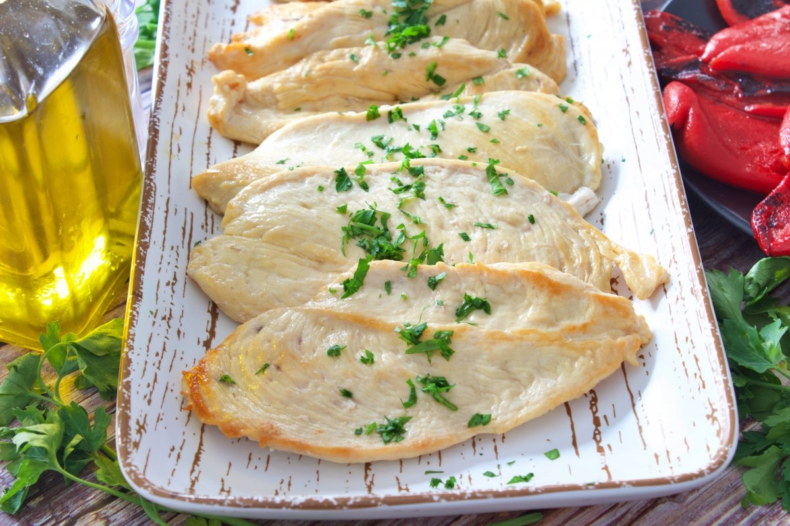
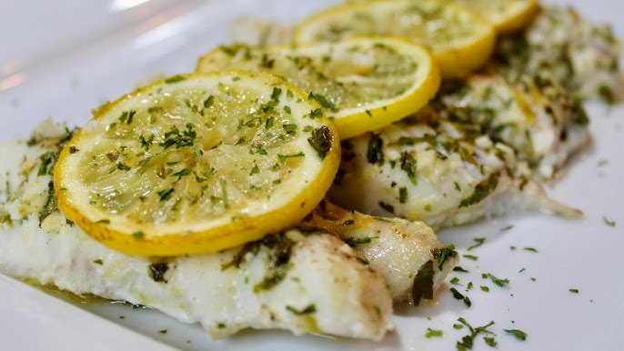

Pollo a la Plancha con Hierbas
Una preparación sencilla con un toque aromático y acompañamiento ligero.

Una preparación sencilla con un toque aromático y acompañamiento ligero.

Receta tradicional con sabor suave y textura jugosa.
